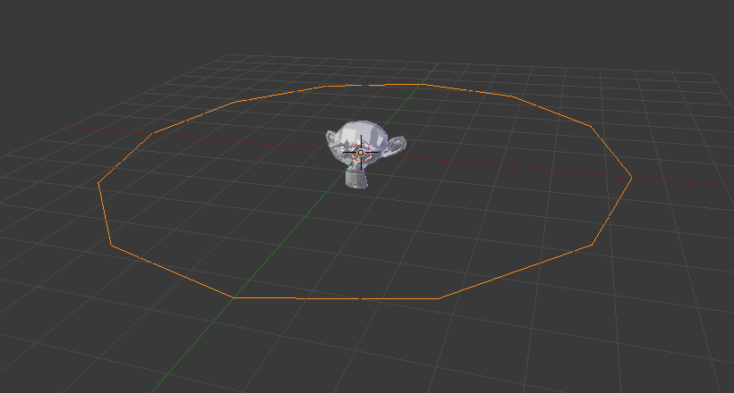
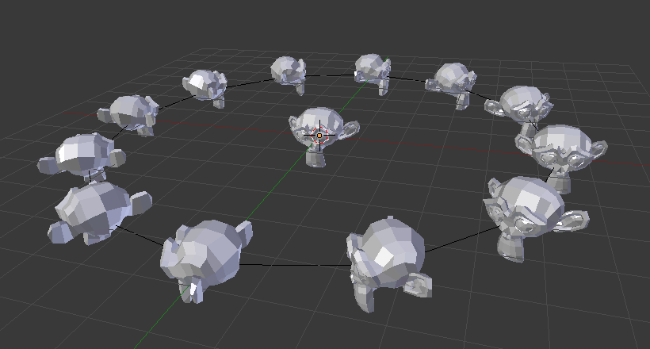
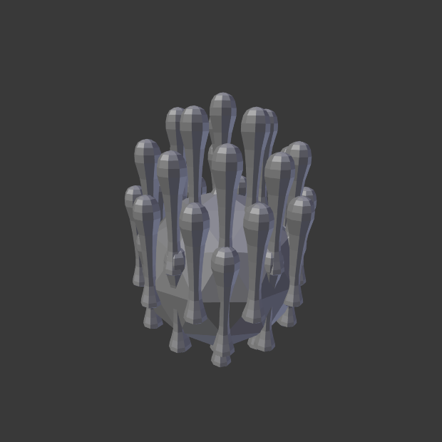

Verts¶
Reference
| Mode: | Object Mode |
|---|---|
| Panel: |
Instance Verts allows you to replicate child objects at the location of every vertex of the parent object.
Note
The relative Object Origin position of the parent and child objects determines offset instanced geometry from parent vertex.
- Align to Vertex Normal
Rotates all instanced objects according to the corresponding vertex normals of the parent mesh.
To change the axis of direction of the instanced objects, select the child object and in the panel change the .
There are actually two approaches to modeling using instanced Verts. They can be used as an arranging tool, allowing to model geometrical arrangements of objects (e.g. the columns of a Greek temple, the trees in a garden, an army of robot soldiers, the desks in a classroom). The object can be of any object type which Blender supports. The second approach is to use them to model an object starting from a single part of it (e.g. the spikes in a club, the thorns of a sea-urchin, the tiles in a wall, the petals in a flower).
Note
Download Example Blend-File
You can download a file with the examples described on this page. In this blend, the first example, a monkey parented to a circle is on layer 1; while a tentacle parented to an icosphere is on layer 2.
Usage¶
Instanced Verts as an Arranging Tool¶
All you need is a base object (e.g. the tree or the column) and a pattern mesh with its vertices following the pattern you have in mind. In this section, we will use a simple scene for the following part. We will be using a monkey head located at the origin of the coordinate system as our base object and a circle at the same location as our parent mesh.

A monkey head and a circle. |

Instanced monkeys on Verts. |
{kind=link}
First, in Object Mode, select the base object and Shift-RMB to add the circle to the selection (order is very important here), and Ctrl-P or to parent the base object to the circle. Now, the circle is the parent of the monkey; if you move the circle, the monkey will follow it.
With only the circle selected, enable Instancing Verts; A monkey head should be placed at every vertex of the circle.
The original monkey head at the center and the parent mesh are still shown in the 3D View but neither will be rendered. If the placement and rotation of your monkey head is odd, you might need to clear its rotation Alt-R, scale Alt-S, location Alt-G, and origin Alt-O.
Rearranging¶
If you now select the base object and modify it in either object or edit mode, all changes will also affect the shape of all instanced objects. You can also select the parent mesh to modify the arrangement of the instances; adding vertices will also add more base objects.
Note that the base objects will inherit changes made to the parent mesh in Object Mode, but not in Edit Mode. So scaling the circle up in object mode will enlarge the monkey head, while scaling the circle up in edit mode will only increase the distance between the base objects.
Orientation¶
The orientation of the base objects can be controlled by enabling Align to Vertex Normal in the Instancing panel. This will rotate all base objects according to the vertex normals of the parent mesh.
To change the orientation of the instanced objects, select the base object and in the panel change the Tracking Axes.

Orientation enabled, orientation +Y. |

Negative Y. |

Positive X. |

Positive Z, up X. |
{kind=link}
Note
The axes of an object can be made visible in the panel. To display the vertex normals of the parent mesh, enter Edit Mode and enable this visualization in the where you can also resize the displayed normals as necessary.
Instanced Verts as a Modeling Tool¶
Very interesting models can be made using Instancing Verts and a standard primitive. In this example, a simple tentacle was made by extruding a cube a couple of times. The tentacle object was then parented to an icosphere. With Align to Vertex Normal enabled for the parent mesh (the icosphere), the orientation of the base object (the tentacle) was adapted to the vertex normals of the parent mesh (in this case the tentacle was rotated -90° about the X axis in edit mode).

A simple tentacle set to smooth. |

Tentacles instanced onto the parent mesh. |

Align to Vertex Normal enabled to align instanced geometry. |
As in the previous example, the shape and proportions of the arrangement can now be tweaked.
To turn all instanced geometry into real objects, simply select the icosphere and , Shift-Ctrl-A. To make the icosphere and the tentacle a single object, make sure they are all selected and go to , Ctrl-J.
See also
Other duplication methods are listed here.